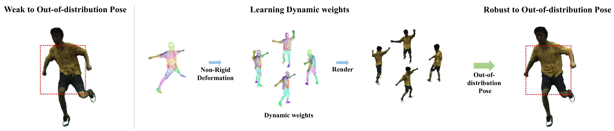
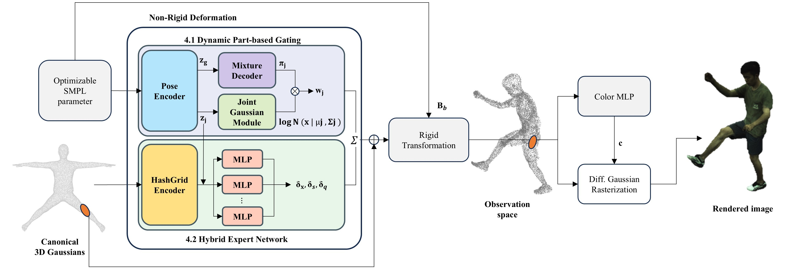
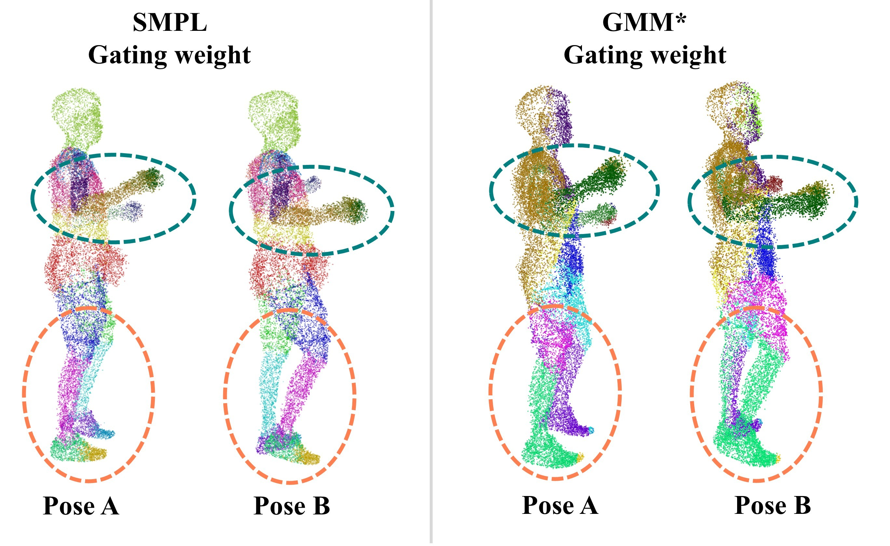

A single global network averages every body part together, causing tearing and stretching in complex poses. AvatarMoE instead assigns each part its own expert, producing robust deformations on challenging out-of-distribution poses.
While 3D Gaussian Splatting (3DGS) has enabled high-quality, real-time animatable avatars, current methods suffer from a key limitation: they model non-rigid deformations with a single global network, which leads to unnatural artifacts such as tearing and stretching in complex poses. To overcome this, we propose AvatarMoE (part-based Mixture of Experts), a framework that decomposes the human body into joint-centric local regions, each governed by a specialized expert network. We introduce three core contributions: (1) a pose-aware Gaussian Mixture Model-based gating network that dynamically allocates expert influence according to the input pose; (2) a memory-efficient hybrid expert architecture with a shared HashGrid encoder and lightweight decoders; and (3) a novel Intra-Expert Coherence Loss that regularizes each expert's deformation field to prevent local inconsistencies. Extensive experiments show that AvatarMoE significantly reduces such artifacts and produces more robust, visually plausible avatars than previous methods, especially for out-of-distribution (OOD) poses.
We reframe non-rigid deformation as modeling a collection of 24 joint-centric local regions corresponding to the SMPL skeleton, applying fine-grained deformation on a per-cluster basis through a Mixture of Experts architecture. The framework has three core components:


On out-of-distribution poses from AIST++ and AMASS, AvatarMoE produces smooth, coherent surfaces and avoids the tearing artifacts of global deformation methods. We show comparisons against two baselines: 3DGS-Avatar (subjects 377, 392, 393) and GART (subjects 386, 387, 394). In each clip the baseline is on the left and AvatarMoE on the right.
@article{yang2026avatarmoe,
title = {AvatarMoE: Decomposing Non-Rigid Deformation with Part-Aware Experts for 3DGS Avatars},
author = {Yang, Hyeri and Hong, Junyoung and Kim, Shinwoong and Lee, Kyungjae},
journal = {Computers & Graphics},
volume = {137},
pages = {104597},
year = {2026},
doi = {10.1016/j.cag.2026.104597},
publisher = {Elsevier}
}